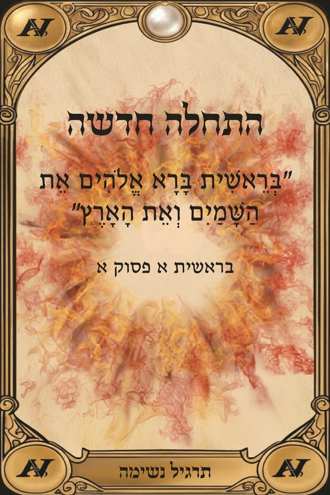
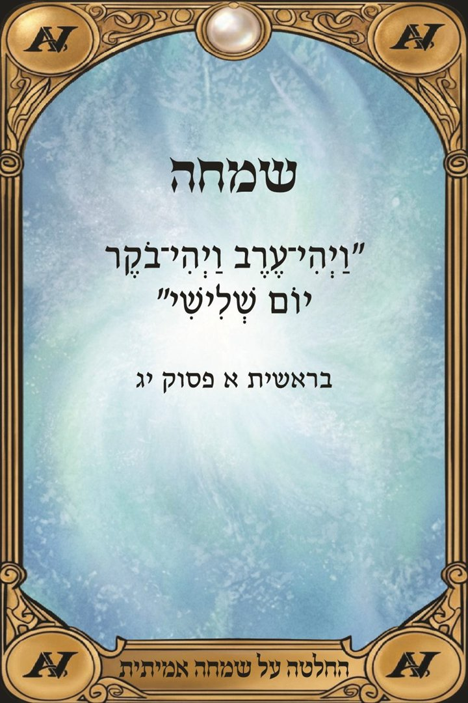
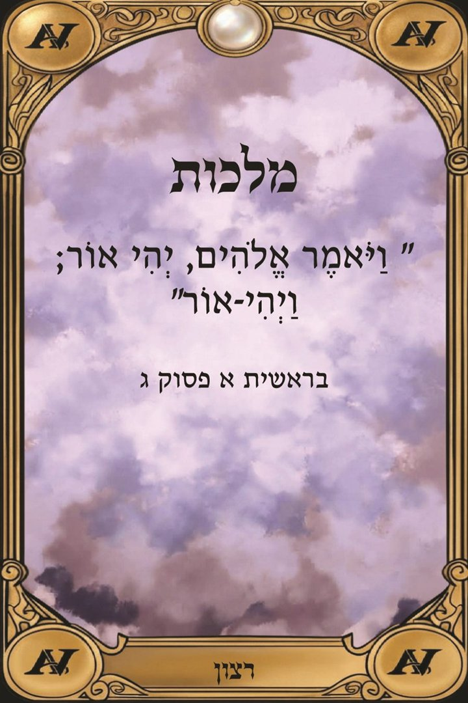
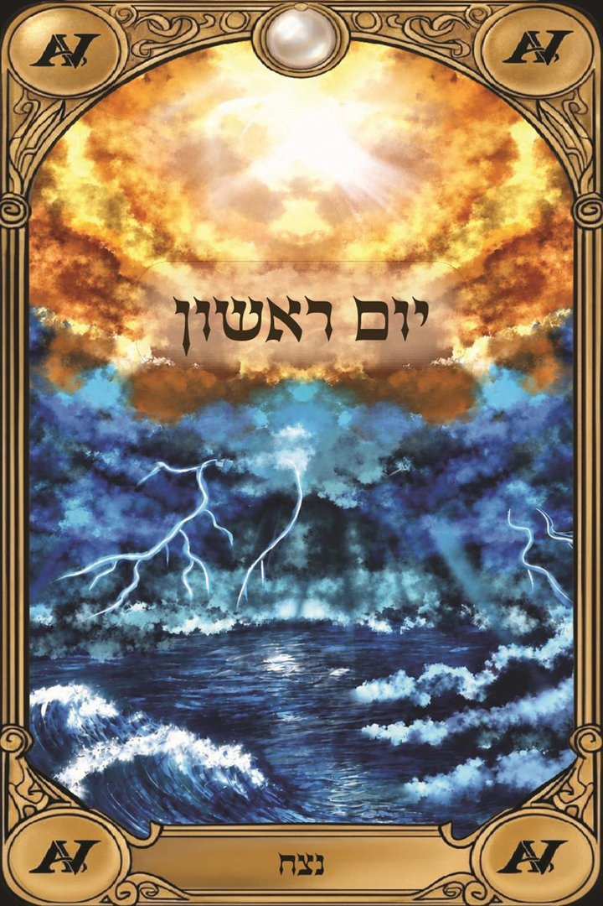
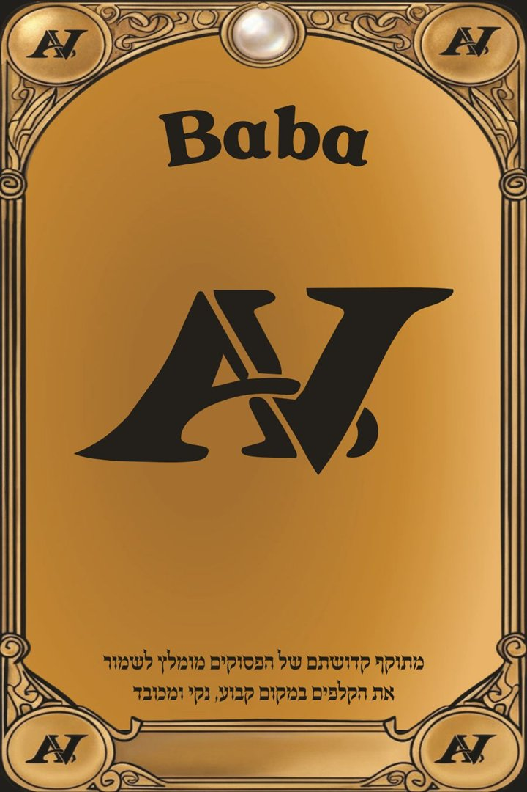

ההזמנות פתוחות · מהדורה ראשונה
72 קלפי ייעוץ והכוונה בהשראת שלושת הפרקים הראשונים בספר בראשית – דרך אישית לגלות מחדש את הטבע האמיתי שלך, ולקבל הכוונה ותרגול לחיים בכל מצב.
אני רוצה חפיסה · 250 ₪✦ ל-50 הרוכשים הראשונים: ייעוץ אישי עם המאסטר אלון ג'ייקוב במתנה, בשווי 400 ₪
למה באבא
כל קלף נושא פסוק מפרקי הבריאה, שם, משמעות ותרגול – כלי ליווי שמזמין לעצור, להתבונן ולפעול.
הפסוקים משלושת הפרקים הראשונים – אמת אוניברסלית שחוצה דתות, פילוסופיות ואמונות.
לא רק תשובה לרגע המשיכה – כל קלף מגיע עם כיוון מעשי ליישום ביומיום.
דף מידע מצורף שמסביר איך להשתמש בחפיסה, ופירוש מלא לכל קלף מחכה באתר – כך שאפשר להתחיל כבר מהיום הראשון.
"במילים הנכונות אפשר לחצוב את המציאות האמיתית שאנחנו רוצים להיות בה."




איך משתמשים
בקופסה מחכה לכם דף מידע עם דרכי הפתיחה. את הפירוש של כל אחד מהקלפים תמצאו באתר.
חשבו על שאלה, ערבבו ושלפו קלף. קראו את הכותרת, הפסוק והמילה בתחתית – והעמיקו בפירוש הקלף באתר.
הפעולה בהווה, למה לשים לב – וסוד ההצלחה.
מתמקדים בקבוצה אחת – למשל העונות: חורף להתכנסות, קיץ לעשייה.
אלון ג'ייקוב, ממייסדי באבא, מסביר איך פסוקי בראשית הופכים לכלי לעבודה עצמית ולשינוי.
קניתי את הקלפים אחרי פגישה עם אלון, ללא כל ידע קודם בספר בראשית. הרגשתי שהקלפים והפסוקים בתוכם פשוט מדברים אליי, ובכך טיפלתי בחרדות והדיכאונות שהיו לי.
רכשתי את הקלפים ונדהמתי לגלות את העוצמה שמסתתרת בקלפים. בזכותם עשיתי עבודה עצמית, והחיים שלי עברו שינוי לטובה.
קלפים עוצמתיים מאוד. משנה חיים בצורה מהפכנית.
72 קלפים בקופסה אחת. מתאים לעבודה אישית, לשיחה זוגית ומשפחתית, למטפלים ולמאמנים, וגם כמתנה משמעותית.

משלמים בביט או בפייבוקס למספר 058-5515948 (אלון ג'ייקוב), שולחים לנו את פרטי המשלוח בוואטסאפ, ונעדכן כשהחפיסה יוצאת למשלוח.